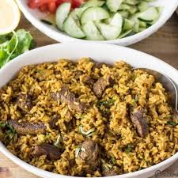

Pilau Recipe

pilau
This dish is a flavorful and fragrant rice pilaf, often featuring meat, vegetables, and aromatic spices. It's a popular
dish in many cultures with variations depending on the region.
Ingredients
- Basmati
- Cooking Oil
- Onion
- Garlic
- Ginger
- Turmeric
- Pilau masala spice
- Salt
- Tomatoes
- Meat
- Water or broth
Steps
- Wash and rinse the rice until the water runs clear. Soak the rice for 30 minutes (optional).
- Heat oil in a large pot or Dutch oven.
- Add chopped onions and fry until golden brown.
- Add chopped garlic, ginger, and turmeric. Cook for a minute until fragrant.
- Stir in pilau masala and salt.
- If using meat, add it to the pot and cook until browned.
- Add chopped tomatoes (optional) and cook until softened.
- Add drained rice and stir to coat with the spices.
- Pour in hot water or broth, ensuring it covers the rice by about an inch.
- Bring to a boil, then reduce heat, cover the pot, and simmer for 15-20 minutes, or until the rice is cooked and fluffed.
- Let the pilau rest for a few minutes before fluffing with a fork and serving.